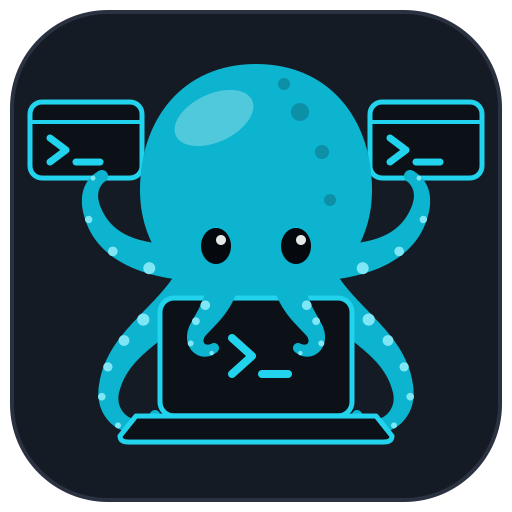
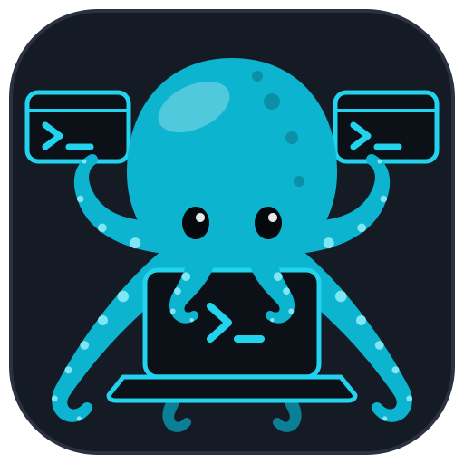
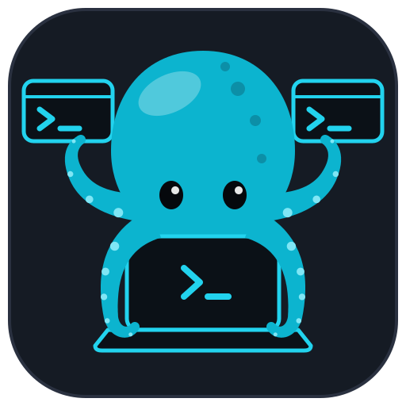
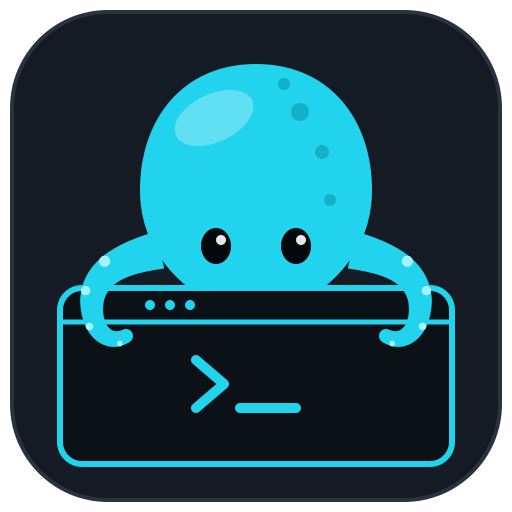
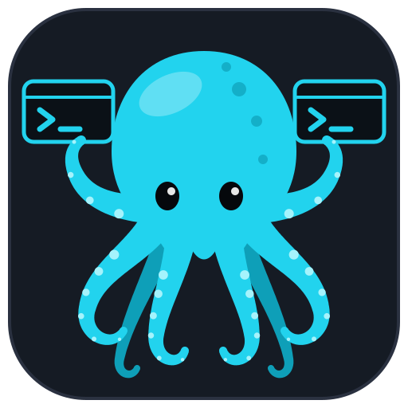
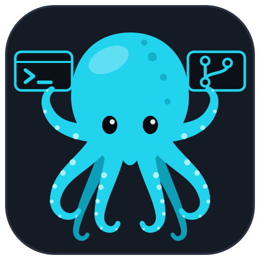
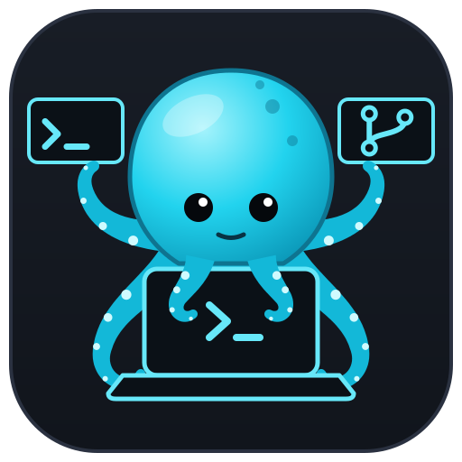
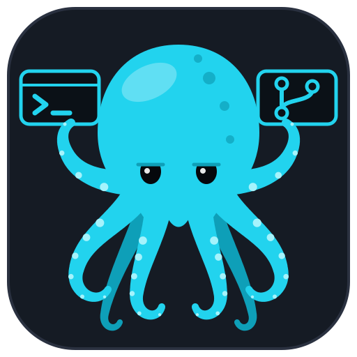
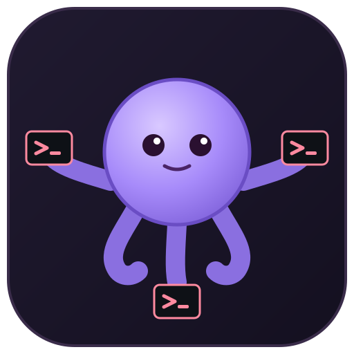

Subject 3a gallery: cyan octopus mascots with black eyes, newest round first. Chosen: octopus-mascot-19 (darker mascot-10), the source of src/renderer/src/assets/octopus.svg. Rendered at 16/32/64/256px on the app's dark theme and on a light background for contrast.
| Option | 16px | 32px | 64px | 256px |
|---|---|---|---|---|
| octopus-mascot-19chosen — darker mascot-10 (body #0cb4cf), juggling a terminal, a tab and a git branch | ||||
| octopus-mascot-15round 7 — darker mascot-12 with two terminals, same arms |  |
|||
| octopus-mascot-16round 7 — darker, arms wrapped around the terminals, curled side arms | ||||
| octopus-mascot-17round 7 — darker, arms flowing wide and below the laptop |  |
|||
| octopus-mascot-18round 7 — darker, arms hugging the laptop |  |
|||
| octopus-mascot-10round 6 — mascot-9 juggling a terminal, a tab and a git branch | ||||
| octopus-mascot-11round 6 — mascot-9 peeking over a terminal window |  |
|||
| octopus-mascot-12round 6 — mascot-9 at a laptop | ||||
| octopus-mascot-13round 6 — mascot-9 waving, holding a terminal | ||||
| octopus-mascot-14round 6 — mascot-9 holding two terminals, glancing left |  |
|||
| octopus-mascot-7round 5 — mascot-3, no mouth, heavy lids | ||||
| octopus-mascot-8round 5 — mascot-3, no mouth, lids raised | ||||
| octopus-mascot-9round 5 — mascot-3, no mouth, open eyes |  |
|||
| octopus-mascot-5round 3 — mascot-4 laptop pose, mascot-1 round shaded head |  |
|||
| octopus-mascot-6round 3 — mascot-1 props (terminal, laptop, git), mascot-4 octopus arms | ||||
| octopus-mascot-3round 2 — cyan octopus, black eyes, holds a terminal & git branch |  |
|||
| octopus-mascot-4round 2 — cyan octopus at a laptop, holds a terminal & git branch | ||||
| octopus-mascot-1multitasking mascot — teal, holds a terminal, laptop & git branch | ||||
| octopus-mascot-2multitasking mascot — purple, juggles three parallel terminals |  |
| Option | 16px | 32px | 64px | 256px |
|---|---|---|---|---|
| octopus-mascot-19chosen — darker mascot-10 (body #0cb4cf), juggling a terminal, a tab and a git branch | ||||
| octopus-mascot-15round 7 — darker mascot-12 with two terminals, same arms | ||||
| octopus-mascot-16round 7 — darker, arms wrapped around the terminals, curled side arms | ||||
| octopus-mascot-17round 7 — darker, arms flowing wide and below the laptop | ||||
| octopus-mascot-18round 7 — darker, arms hugging the laptop | ||||
| octopus-mascot-10round 6 — mascot-9 juggling a terminal, a tab and a git branch | ||||
| octopus-mascot-11round 6 — mascot-9 peeking over a terminal window | ||||
| octopus-mascot-12round 6 — mascot-9 at a laptop | ||||
| octopus-mascot-13round 6 — mascot-9 waving, holding a terminal | ||||
| octopus-mascot-14round 6 — mascot-9 holding two terminals, glancing left | ||||
| octopus-mascot-7 | ||||
| octopus-mascot-8 | ||||
| octopus-mascot-9 | ||||
| octopus-mascot-5round 3 — mascot-4 laptop pose, mascot-1 round shaded head | ||||
| octopus-mascot-6round 3 — mascot-1 props (terminal, laptop, git), mascot-4 octopus arms | ||||
| octopus-mascot-3round 2 — cyan octopus, black eyes, holds a terminal & git branch | ||||
| octopus-mascot-4round 2 — cyan octopus at a laptop, holds a terminal & git branch | ||||
| octopus-mascot-1 | ||||
| octopus-mascot-2 |